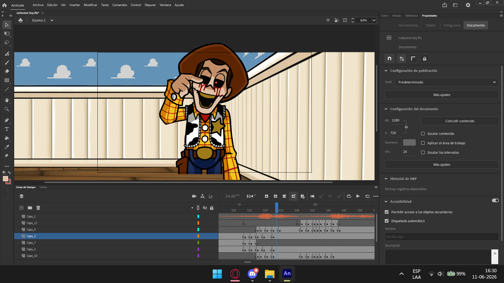
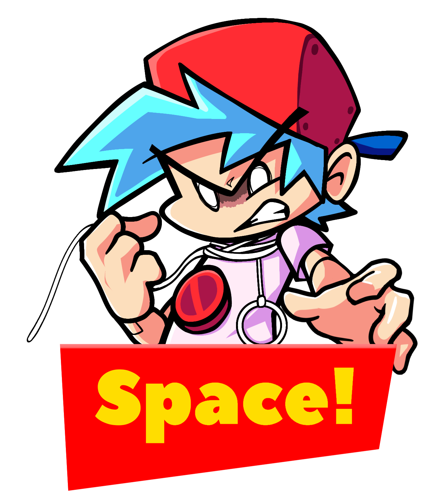
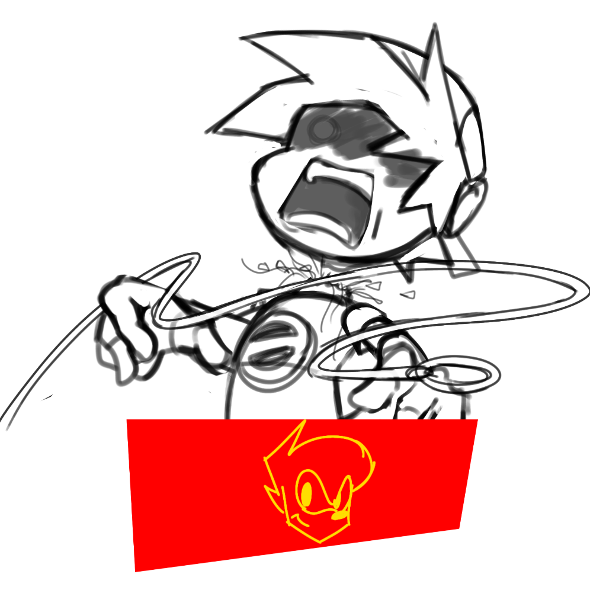
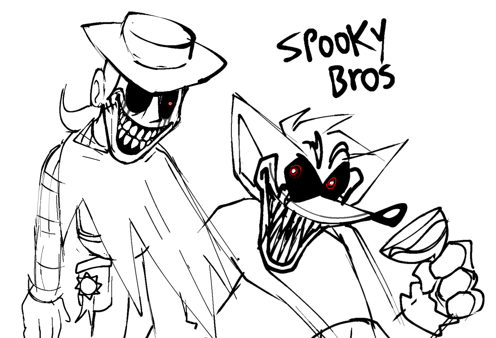
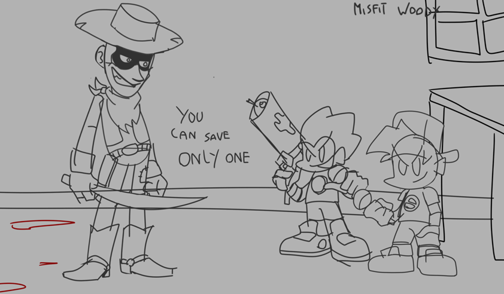
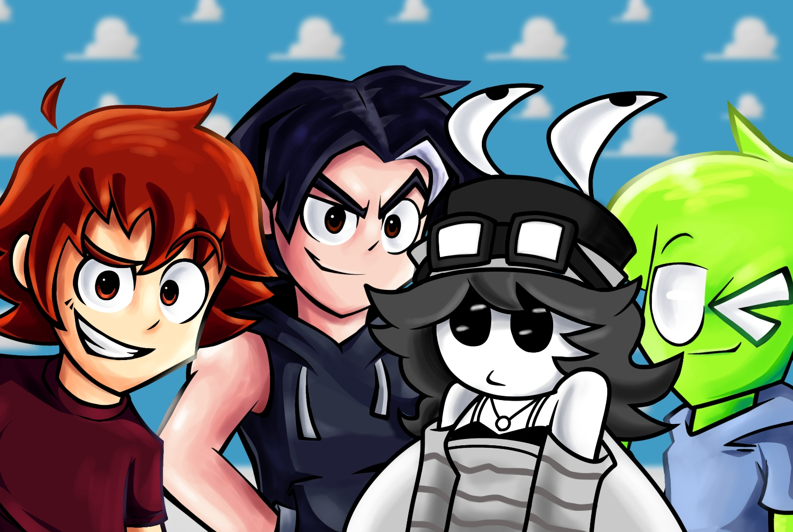

First of all, we'd like to announce that we're celebrating the mod's third anniversary after nearly three years of development.
This is our first devlog, created to make the wait a little easier for everyone who's been following the project's progress.
- Development of V1 -
As some of you theorized, we originally planned to release the mod this month or at least publish a trailer revealing its release date.
However, due to recent events, we lost a significant amount of progress. As a result, much of that work is now being rebuilt from scratch.
- Main Week -
We lost two songs from the Main Week (in terms of music).
We can't share much information about these songs since we want them to remain a surprise, so we'll have to be a bit vague.
One of the two songs is already being remade, and development is progressing very well.
As for the other song, it currently doesn't have a composer assigned, but we already have a few people in mind who could take on the project.
There was also a noticeable setback in both the artwork and voice acting
The artwork is already being redone—it will take some time, but the progress is looking promising. As for the voice acting, we need to find a new voice actor to replace the previous one.
- Cutscenes / Animations -
Most of the cutscenes are nearly finished. we just need to complete the remaining ones.
Progress was temporarily halted because our lead animator, who was responsible for these cutscenes, experienced issues with their PC.
At the moment, another animator is helping with the remaining cutscenes so they can be completed on time.
As for the animations, some of them need to be remade because they use artwork created by someone we are no longer associated with.
We haven't been able to continue working on those animations yet, since the artwork must first be redone before they can be animated again.

- Programing -
All of the songs in the Main Week
(with the exception of the discarded ones)have already been programmed and
all of their events have been recreated.
This was done to make the gameplay feel more dynamic and engaging
while also adding more excitement to each song.
In this new preview of "Damaged Toy", we've made several changes to the background
artwork, and every event throughout the song to make the gameplay feel much more dynamic, just as we mentioned before.
One thing worth pointing out is that the warning shown before you need to press the Space key to avoid Woody's attack is currently being remade.
The original version was created by Majavi, so the one currently in-game is only a placeholder while the new version is being worked on.
Below, you can see the new warning created by one of our directors, Ramon/Fernan.


- Charting -
As for the charting, it shouldn't be much of an issue. Our charters work very quickly, so charting the songs shouldn't be a major problem.
There's no need to worry about that.
- Extra songs -
Most of the extra songs are nearly finished, although some still need additional artwork and animations. In this section, we lost two songs in terms of music:
- Wooden Hand
- Friends Until Death
**Wooden Hand** had already been completed, but a large portion of the work had to be discarded.
As a result, the song is now being completely remade from scratch with a new composer, along with new voice lines and adjustments to its animations. We hope to recover all of the lost progress as soon as possible.
As for **Friends Until Death (FUD)**, we already had an initial version of the song and were simply waiting for an updated version, as requested by the former composer. However, both versions have now been scrapped. The song will also be receiving a new name, since its original title was chosen by Majavi (former composer, former animator, former artist, etc.), and we no longer wish to keep any of his work associated with the project.
The song is currently making excellent progress under its new composer.
- Covers -
As the name suggests, these are simply covers. There will be a separate section in Freeplay dedicated exclusively to them.
It includes the same two covers as before, along with one brand-new addition.
It's not anything huge, but we think one of them in particular might end up being a fan favorite.
For those wondering why there aren't more covers: we originally planned to include three additional ones. However, due to time constraints and the amount of work required to create several sets of sprites just for a few cover songs, we decided to cut them. That said, we may consider adding more in future updates.
- Collabs -
Many of you may already know this, but others might not:
we have two official collaborations with two major mods currently in development:
• TUESDAY WOOMPAS
• CREEPY NIGHT PASTA
However, due to content cuts in the mod, we decided to move these collaborations to a future update after V1
dedicated entirely to collaborations
We invite everyone to follow the accounts of these two projects as well, since they are part of our family.
Extra fact: Jerardo made Woody's sprites for Voodoo's Match in a single night.

- Jerardo's Note -
Look, I'll be honest with you: regarding the future of the mod, I can't guarantee anything.
After V1, we don't know if we'll decide to continue developing the mod or leave it as it is and consider it finished there.
However, something we've discussed with the other directors is that there won't be any updates as big as V1 anymore.
If we decide to continue development, we'll do it through smaller updates, adding new content little by little.
But once we reach a point where we feel that the mod has reached a point where it deserves an ending, we'll stop there.
We don't promise anything, but if things go well, we still have some characters planned to be added, such as:
• Toy Tumor
• Robot Chicken Toy Story
• Toy Story 3 Alternative Ending
• Misfit Woody
We have many other new characters planned to be added over time.
But as I said before, we don't promise anything.
Here is an old concept that Jerardo made around 2024 for Misfit Woody (it is still subject to change).

29/07/2026
- Mensaje de los directores -

- Jerardo Director y creador de TMF -
Jerardo: Al final de todo queremos agradecerles por acompañarnos en esos 3 años con el desarrollo
Estos años han sido difíciles en cuanto el desarrollo, tuvimos nuestros tropiezos, pero
siempre nos ponemos de pie y seguimos adelante, y eso me hizo apreciar mucho a los devs, con quienes nos reímos y hacemos nuestras bromas, llevarnos bien y sobre todo, divertirnos como amigos.
año no pudimos realizar un evento o un directo como años anteriores, pero tampoco queríamos dejarles
Este con las manos vacías después de acompañarnos estos 3 años, este mod no debe ser algo de lo que debemos sentirnos
forzados a terminarlo o hacer un mod a nivel de otros mods populares y ambiciosos que terminaron siendo cancelados tristemente, debe ser algo con lo que uno pueda sentirse cómodo y sin presión alguna, por eso agradecemos mucho su paciencia, después de todo, aun seguimos siendo adolescentes.
Sin mas, un abrazo fuerte a todos, esperamos que esta pequeña sorpresa sea de su agrado, estén atentos a próximos
adelantos que estaremos subiendo a nuestras redes oficiales ;3
- Ramon/Fernan Director de TMF -
No tengo una forma de describir el cariño que le tengo a este proyecto y a los miembros de este, trabajar en este mod sin dudas ha sido una de las mejores experiencias que
he vivido hasta el momento, gracias a este proyecto he aprendido muchas cosas que me han ayudado a mejorar como artista, muchos devs que me inspiraron lograron formar una versión de mi
que nunca me había imaginado hace 3 años. Se que ha sido mucha la espera, sin embargo quiero agradecer además de los devs
a ustedes nuestros seguidores por siempre seguir siéndonos fieles a pesar de tener que aguantar muchas capturas sin sentido de discord
retrasos o algun que otro inconveniente... Para aquellos que aún creen en nuestro trabajo, les aseguramos que decepcionarlos no es ninguna opción
porque si bien aún queda mucho trabajo por rehacer gracias a los acontecimientos recientes, no podemos esperar a terminar esto de una vez y enseñarles todo el cariño, amor y dedicación que le pusimos a este mod.
vs pera será vengado
- The leon Director de TMF -
Las expresiones me cuestan en soltarlas pero es demasiado por tanto
que siento amor en este proyecto uno de los proyectos que le debo mucho
y demasiado pero mas a su comunidad que lo aprecio tanto hasta ahora, sin duda su apoyo en este mod me dejaron
con las ganas de seguir adelante con esto y darle lo mejor hacia ustedes que desde un inicio lo disfrutaron aunque fueran 3 años de progreso sabrán que ponemos mucha
dedicación para que lo disfruten y hasta ahora los vi que son capaces de esperar un poco mas, aunque aya muchos obstáculos nada impide buscar una solución
solución que podemos seguir porque ustedes no dejaron de tener fe en el mod? Pues yo tampoco, entonces esto es lo que pasa cuando no te rindes 💙
-Straw Directora y Main Coder-
Es increíble ver hasta dónde ha llegado el mod y cómo la mayoría de los desarrolladores hemos crecido como personas durante todo este tiempo.
Cuando empezó TMF, muchos teníamos muy poca experiencia (yo incluida, jeje)
y mirar atrás para ver todo el camino recorrido hasta llegar a algo mucho más sólido y de mejor calidad me llena de orgullo.
Personalmente, le debo mucho a este mod. Gracias a él se me abrieron puertas para
colaborar en otros proyectos, conocí a personas increíbles y pude ganar muchísima experiencia como desarrollador.
También quiero agradecer de corazón a todas las personas que apoyaron el mod
a quienes les gustó nuestro trabajo y también a quienes fueron críticos con él.
De una forma u otra, todo eso nos ayudó muchísimo a crecer, a dar a conocer el proyecto y a llegar a más personas que terminaron formando parte del equipo.
Gracias a todo el cariño que recibimos, los comentarios, los fanarts, los videos y el apoyo constante, encontramos la motivación
para seguir adelante y continuar desarrollando TMF. Sin esta comunidad, muchas de las cosas que logramos probablemente no habrían sido posibles.
También queremos agradecer a todos los equipos y desarrolladores que nos dieron la oportunidad de colaborar
en sus propios proyectos. Gracias por confiar en nosotros y permitirnos formar parte de sus trabajos.
Esas experiencias ayudaron a que muchos miembros del equipo crecieran, aprendieran cosas nuevas y siguieran desarrollándose como creadores.
Pase lo que pase en el futuro, TMF siempre tendrá un lugar muy especial en mi corazón. 💖